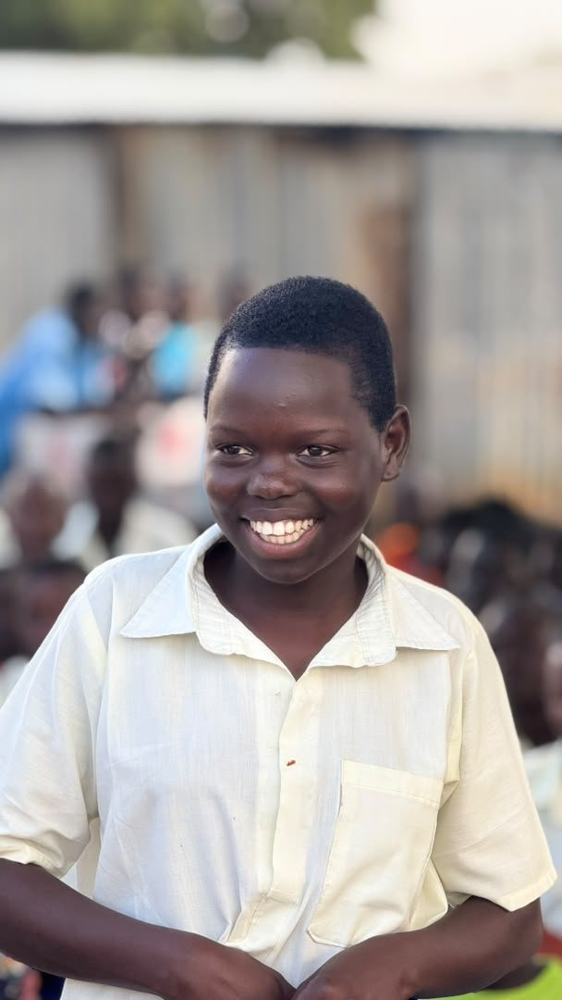
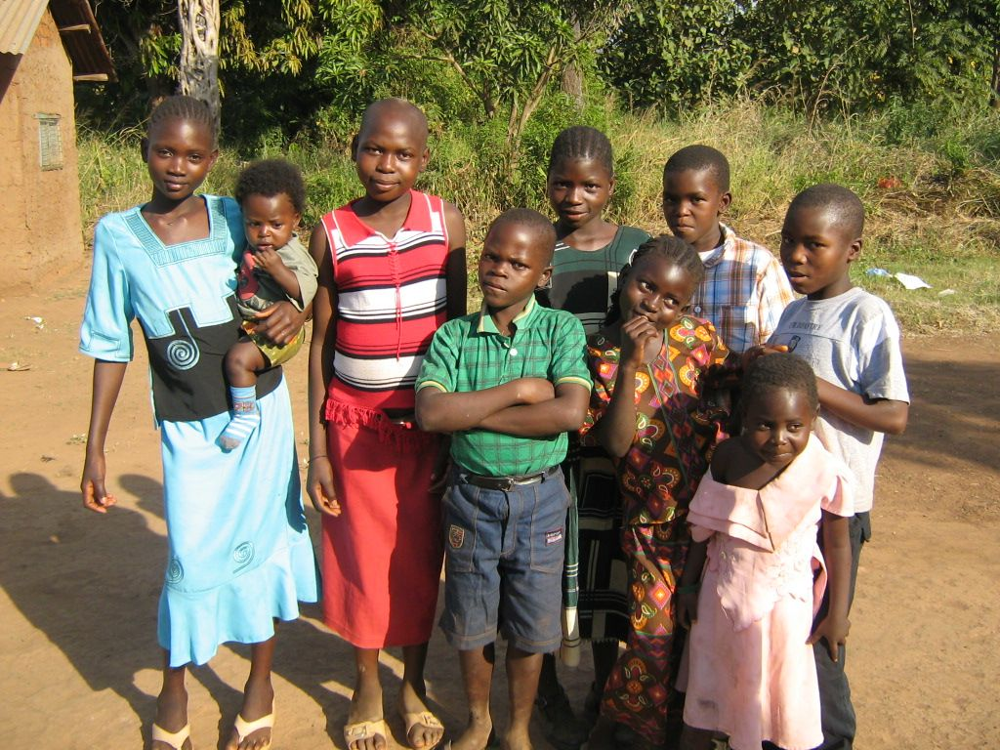
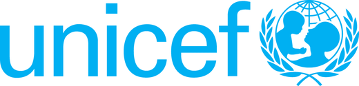
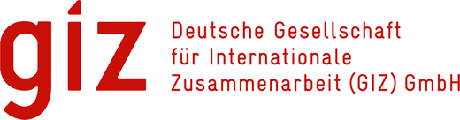

LiveOngoing project
Scholarship And Education Support For Primary And Secondary Learners In Magwi County
We are helping vulnerable learners in Magwi County stay in school, including orphans and children from families facing financial hardship.
CYAFA South Sudan works to protect children, strengthen families, and empower communities.
Children and Youths Advocate Foundation in Africa (CYAFA South Sudan) was founded to improve and uphold the rights of children and youth in communities across Africa. We work with high need, low resource families to prevent child abuse, reduce child poverty, and give every child a better chance in life.
More about usLiveOngoing project
We are helping vulnerable learners in Magwi County stay in school, including orphans and children from families facing financial hardship.



Practical programs that help children learn, families stay healthy, and young people and women earn a living.
We also run: Scholarship Programme, Youth Empowerment, Child Protection & Legal Aid, Environment & Agriculture, Peacebuilding & Human Rights, Emergency Response, Drug Abuse Prevention and the Resource Center.

We support healthy personality development, vocational skills, and professional development for long term sustainability.

We identify poor women and help them earn an income through self help groups, vocational training, and family welfare programs.

We guide young people toward their goals, offer vocational training, create self employment opportunities, and encourage them to become role models.
A message from our Founder & Executive Director
When a child is protected, educated and given a fair chance, a whole community grows stronger. That belief is why CYAFA exists.
Every day, our team works alongside families in South Sudan to keep children safe, keep learners in school, and help young people and women build a better future. Thank you for standing with us. Together, we can give every child a better chance in life.

Our mission
To advocate for the rights of children and youth in the most marginalized communities in Africa.
Your donation helps children, women and youth in South Sudan. Choose the work you would like to support.

Where help is needed most
Help us build new community schools and upgrade existing ones, so more children, especially girls, can go to school and learn.
Donate to educationFree legal assistance for children who are victims of abuse, exploitation and trafficking.
DonateSafe drinking water, sanitation and basic health care for communities in neglected areas.
DonateSelf help groups, vocational skills and a steady income for poor women.
DonateCareer guidance, vocational training and a path to self employment.
DonateTo donate, send us a message and our team will tell you how you can give.
What we bring to every community we work with.
We work alongside international organizations and donors who share our commitment to children, families and communities.




We work with government agencies, NGOs, and donor organizations that share our commitment to community development. If you want to partner, volunteer, or support our work, get in touch.